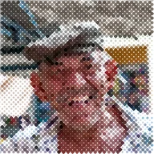

Halftoon

Gedrukte stippen die groter worden waar het beeld donker is.
Instellingen
| Instelling | Type | Bereik | Standaard |
|---|---|---|---|
| Grootte | Getal | 2 tot 200 | 10 |
| Hoek | Hoek | -360° tot 360° | 45° |
| Stijl | Keuze | Klassiek, Tweekleurig, Standaard | Klassiek |
| Gekleurde stippen | Aan of uit | – | Aan |
| Stipkleur | Kleur | – | #103152 |
| Papierkleur | Kleur | – | #FCECDA |
| Sterkte | Getal | 0% tot 100% | 50% |
| Fase | Getal | -1000 tot 1000 | 0.5 |